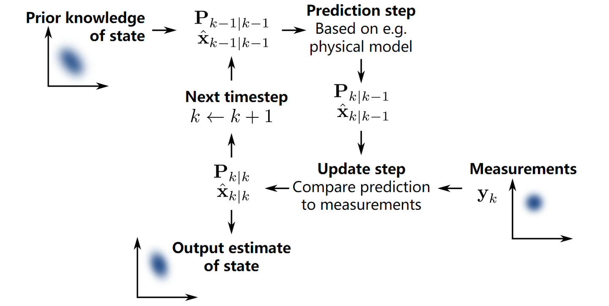
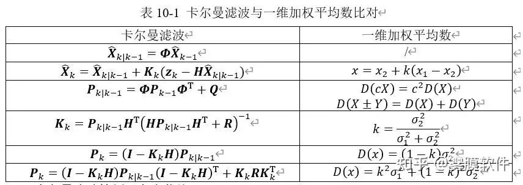

# 卡尔曼滤波 (Kalman Filter) 101
# 0、从简单的开始
假设你有两个传感器，测的是同一个信号。可是它们每次的读数都不太一样，怎么办？
取平均。
再假设你知道其中贵的那个传感器应该准一些，便宜的那个应该差一些。那有比直接取平均更好的办法吗？
取加权平均
但是怎么取加权平均呢？假设两个传感器的误差都符合正态分布，假设你知道这两个正态分布的方差，用这两个方差值，你可以得到一个 “最优” 的权重。
我们假设两个相互独立的随机变量满足:
X∼N(μ1,σ12)
和
Y∼N(μ2,σ22)
则有x=kx1+(1−k)x2=k(x1−x2)+x2
为了使其方差最小，经过一系列数学计算，我们可以得到
k=σ12+σ22σ22
看！k 就是最优权重
上面是符合我们此前认知的情景。接下来，重点来了。假设我们只有一个传感器，但是我们还有一个数学模型。模型可以帮我们算出一个值，但也不是那么准。怎么办？
把模型算出来的值，和传感器测出的值，（就像两个传感器那样），取加权平均。
同理，经过一系列数学计算，我们也可以得到一个最优的权重K，我们叫他 卡尔曼增益 。
但是，直到现在，我们讨论的都还是某一个固定时刻的情况。我们的测量和模型输出都只是一个时刻的值。现在假设这个信号随时间变化。比如你在跟踪一个移动的物体，它的位置在不断改变。你每隔一段时间收集一次传感器的读数，这样就形成了一个时间序列。
怎么办？你不能用同一个固定的权重k 来对待所有时刻的数据，更不能把所有数据糊在一起算一个大平均。相反，你应该这样做：
迭代法：
- 第 1 步：根据上一时刻的结果，和你对系统的理解（数学模型），预测现在的状态
- 第 2 步：新的传感器读数来了，结合这个预测值，用我们之前说的加权平均思想，得到现在时刻的最优估计
- 第 3 步：这个最优估计将作为下一时刻的 "上一时刻的结果"，重复第 1 步
这样，每一个时刻，我们都在做同样的事：预测 → 测量 → 更新。 这就是卡尔曼滤波的核心思想。

# 1、系统建模
# 状态转移方程
现在，假设我们需要观测一辆小车的速度和位置，即要观察的状态x=(p,v)，同样的，我们考虑的状态通常是随时间变化的，所以我们为它打上下标，即xk−1=(pk−1,vk−1) 代表第k−1 时刻的状态量。
如果我们要对小车进行控制，比如让小车加减速，可以用一个控制量uk 来表示，在这个例子中，取uk=ak，即选择控制小车的加速度。
如此一来，我们可以按照最基本的牛顿运动定律写出小车下一时刻的状态xk=(pk,vk)：
pk=pk−1+vΔt+21ak(Δt)2
vk=vk−1+akΔt
为了方便表示，我们将它写成矩阵形式：
xk=Fkxk−1+Gkak(状态转移方程)
其中，Fk（称为状态转移矩阵）为：
Fk=(10Δt1)
Gk（称为控制输入矩阵）为：
Gk=(21(Δt)2Δt)
但是，现实的情况并没有那么理想，小车可能会受到外界的各种扰动，比如，轮胎打滑，地面崎岖等等，都会使得状态转移的过程中混入噪声干扰（我们称为过程噪声wk），而且这个噪声往往是无法测量的。好在，很多情况下，我们可以认为这个噪声服从均值为零的正态分布，即:
wk∼N(0,Qk)
其中，Qk 为协方差矩阵。
那么把状态转移方程重写为
xk=Fkxk−1+Gkuk+wk
其中uk=ak。
# 观测方程
上面的状态转移方程为我们提供了观察系统状态的一种方式。同时，我们还会利用各种传感器观测这个系统的各个状态量。比方说，我们利用 GPS 来观测这个小车的状态zk，它和系统状态量的关系是：
zk=Hkxk
其中的Hk 是观测模型，它把系统真实状态空间映射成观测空间。显然，如果 GPS 能够观测这个小车的pk 和vk，那么对应的Hk 就是一个 2 维单位矩阵。
同样的，观测时，也不可避免的存在噪声，我们将观测噪声记为vk，也同样认为它服从均值为零的正态分布，即:
vk∼N(0,Rk)
zk=Hkxk+vk
其中，Rk 也为协方差矩阵。
# 总结
请牢记这两个公式：
xk=Fkxk−1+Gkuk+wk
zk=Hkxk+vk
现在我们比较这两种方式得到的系统状态，容易想到，状态转移方程得到的系统状态在演变时会非常平滑，但它的不确定度会随着迭代而逐渐增大，因为误差会在一次次迭代的过程中不断累积。相反，由量测系统得到的状态不存在累积误差，但演变时也会很不平滑。这时我们就需要将两者得到的状态有效结合起来。这就是卡尔曼滤波做的事情了。
# 2、求取误差协方差矩阵
在上一章节我们已经知道，我们对系统状态的估计不可能是完美的，因为总会受到过程噪声、测量噪声的影响。因此，我们不仅需要给出状态的估计值，还需要知道这个估计值有多大的不确定性，即定量评判这个估计值的优劣。这种不确定性通常用误差的协方差矩阵来描述。
接下来，我们会尝试一步一步地推导误差协方差矩阵的表达式。
# 迭代初值与符号约定
首先，假设我们已经获取了 k-1 时刻的系统状态作为初值，表示为x^k−1∣k−1。
这个表达方式和我们在上面见到的略有不同：
- 帽子符号 ⋅^：表示这是一个估计值，而不是真实值。真实的状态 xk−1 我们永远无法直接得到，我们能做的只是估计它。
- 双下标 k−1∣k−1：含义是 " 用到第 k−1 时刻的所有信息，对第 k−1 时刻状态的估计 "，即后验估计。通俗的说，就是已经取加权平均后的估计量。
# 求取先验协方差
根据上面的状态转移公式，我们可以得到：
x^k∣k−1=Fkx^k−1∣k−1+Gkuk+wk(2-1)
先求取x^k∣k−1 的协方差矩阵，令Pk∣k−1=cov(x^k∣k−1,x^k∣k−1), 简写为 Pk∣k−1=cov(x^k∣k−1), 即
Pk∣k−1=cov(Fkx^k−1∣k−1+Gkuk+wk)=Fkcov(x^k−1∣k−1)FkT+cov(Gkuk)+Qk(2-2)
其中，cov(Gkuk) 为 0, 因为可以认为输入是已知控制量。整理一下，就是
Pk∣k−1=FkPk−1∣k−1FkT+Qk(2-3)
式 (2-3) 是迭代的第一步，这告诉了我们，单纯按照运动模型来预测系统下一时刻的状态（即先验估计x^k∣k−1），它的不确定性是多少（即Pk∣k−1）。
至少这个式子现在看起来还挺简洁的
# 测量更新
现在我们有了先验估计和它的不确定性，与此同时，传感器给我们送来了一个新的测量值zk。
首先，要定义一个量来表示测量值zk 和我们预测的测量值Hkx^k∣k−1 的差值，即残差:
y~k=zk−Hkx^k∣k−1(2-4)
后验估计就是在这条 “差距” 上乘以一个权重，然后加到先验估计上：
x^k∣k=x^k∣k−1+Kky~k(2-5)
这里的Kk 就是我们梦寐以求的卡尔曼增益。它决定了我们到底该更相信模型，还是更相信传感器。
# 求取后验误差协方差
像对待先验估计一样，我们也需要知道后验估计的误差协方差Pk∣k, 这样才能知道这次融合后的结果到底有多可靠。
因此，先定义后验估计误差：
x~k∣k=xk−x^k∣k
把上述的 (2-4)(2-5) 式带入，经过整理，可以得到:
x~k∣k=(I−KkHk)(xk−x^k∣k−1)−Kkvk(2-6)
xk−x^k∣k−1 这个表达式很眼熟，其实他就是先验误差\tilde{x}_
然后，求取后验估计误差的协方差矩阵cov(x~k∣k,x~k∣k)，把式 (2-6) 带入，得
cov(x~k∣k)=(I−KkHk)cov(x~k∣k−1)(I−KkHk)T+KkRkKkT(2-7)
我们注意这个式子中的cov(x~k∣k−1)(先验误差协方差)，他其实就是cov(x^k∣k−1)。因为x~k∣k−1=xk−x^k∣k−1, 而真值是个常量。
根据概率论知识，一个随机变量加减一个常量后的方差不变。
为了简洁，我们用Pk∣k 来表示cov(x~k∣k)。整理一下，把它写成一个关于Kk 的表达式：
Pk∣k=Pk∣k−1−Pk∣k−1HkTKkT−KkHkPk∣k−1+KkHkPk∣k−1HkTKkT+KkRkKkT
=Pk∣k−1−KkHkPk∣k−1−Pk∣k−1(KkHk)T+KkSkKkT(2-8)
其中，Sk=HkPk∣k−1HkT+Rk。
现在，我们已经求出了后验误差协方差矩阵的表达形式。
我们离胜利不远了！
# 3、求卡尔曼增益Kk
在上一章，我们废了好大力气得出了Pk∣k 的表达式，这是因为我们需要它来衡量估计值的不确定性。不确定性越小越好，因此，我们 希望Pk∣k 的迹 (Trace) 最小。
为什么是迹最小？Pk∣k 是一个矩阵，不是一个数字，没法直接说 “哪个更小”。我们需要把它压缩成一个标量来比较优劣，而 tr(Pk∣k) 正好就是一个很自然的选择。
因为协方差矩阵对角线元素就是各个状态量的方差，所以
tr(Pk∣k)=i∑Var(xi)
也就是 “总体不确定性” 的总和。让它最小，就等价于让整体估计误差尽可能小。
从优化角度看，迹运算还有一个好处：形式简单、可微，最后能推到出闭式解的Kk，这也是卡尔曼滤波这么优雅的关键之一。
接下来让我们一步步地求取tr(Pk∣k) 对Kk 的导数，并令其为 0，从而求取最优卡尔曼增益Kk。
由式 (2-8)
Pk∣k=Pk∣k−1−KkHkPk∣k−1−Pk∣k−1(KkHk)T+KkSkKkT
其中
Sk=HkPk∣k−1HkT+Rk
对两边取迹：
tr(Pk∣k)=tr(Pk∣k−1)−2tr(KkHkPk∣k−1)+tr(KkSkKkT)
这里的2tr(KkHkPk∣k−1) 是怎么来的？
观察式 2-8 中的这两项：KkHkPk∣k−1 和Pk∣k−1(KkHk)T。
由于协方差矩阵是对称矩阵，这两项其实互为转置。而tr(AT)=tr(A)，所以这两项的迹相等。
利用矩阵求导常用结论：
∂K∂tr(KA)=AT,∂K∂tr(KSKT)=2KS(S=ST)
可得
∂Kk∂tr(Pk∣k)=−2Pk∣k−1HkT+2KkSk
令导数为 0：
−2Pk∣k−1HkT+2KkSk=0
KkSk=Pk∣k−1HkT
Kk=Pk∣k−1HkTSk−1
代回Sk，得到卡尔曼增益的标准形式：
Kk=Pk∣k−1HkT(HkPk∣k−1HkT+Rk)−1 (3-1)
我们算出了最优的权重！
这就是最终结果。直观上看：
- 当测量噪声Rk 很大时，Kk 变小，更相信模型预测；
- 当先验不确定性Pk∣k−1 很大时，Kk 变大，更相信测量值。
# 4、回代与更新
现在我们已经得到了最优卡尔曼增益：
Kk=Pk∣k−1HkT(HkPk∣k−1HkT+Rk)−1
接下来做的事很直接：把它回代到更新公式里。
先更新状态估计：
x^k∣k=x^k∣k−1+Kk(zk−Hkx^k∣k−1)
再更新误差协方差：
Pk∣k=(I−KkHk)Pk∣k−1(I−KkHk)T+KkRkKkT
这个更新公式被称为 Joseph Form。事实上，有一种更简洁的写法：
Pk∣k=(I−KkHk)Pk∣k−1
两者在精确数学推导里是等价的，但在计算机里会有浮点误差。简式在数值计算时更容易把协方差矩阵算得 “不对称” 甚至 “非半正定”（出现负方差这种不合理现象）。
而约瑟夫形式通过保留两项 “平方项” 结构，能更好地维持Pk∣k 的对称性与非负性，所以在工程实现里通常更稳、更推荐。
到这里，一次完整迭代就闭环了。每个时刻重复下面四步即可：
x^k∣k−1=Fkx^k−1∣k−1+Gkuk
Pk∣k−1=FkPk−1∣k−1FkT+Qk
Kk=Pk∣k−1HkT(HkPk∣k−1HkT+Rk)−1
x^k∣k=x^k∣k−1+Kk(zk−Hkx^k∣k−1),Pk∣k=(I−KkHk)Pk∣k−1
这就是卡尔曼滤波从 “预测” 到 “更新” 的完整主干流程。
好耶！
# 5、与一维加权均值的比较
还记得我们在第 0 节说的吗？其实卡尔曼滤波就是多维的加权平均数，公式是完全对应的。

WOW
# 6、参考文献
知乎问答 - 如何通俗并尽可能详细地解释卡尔曼滤波？
知乎问答 - 卡尔曼滤波 Kalman Filter 之美在于什么？
知乎专栏 - 卡尔曼滤波 (Kalman filter) 含详细数学推导